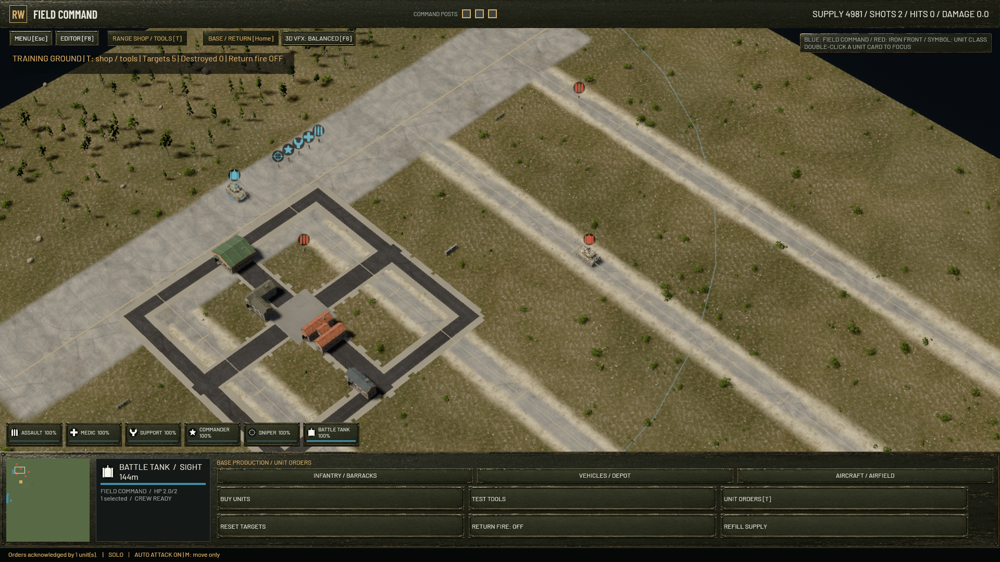
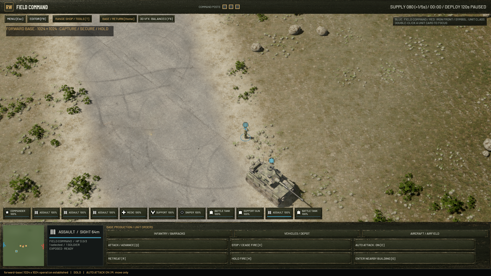
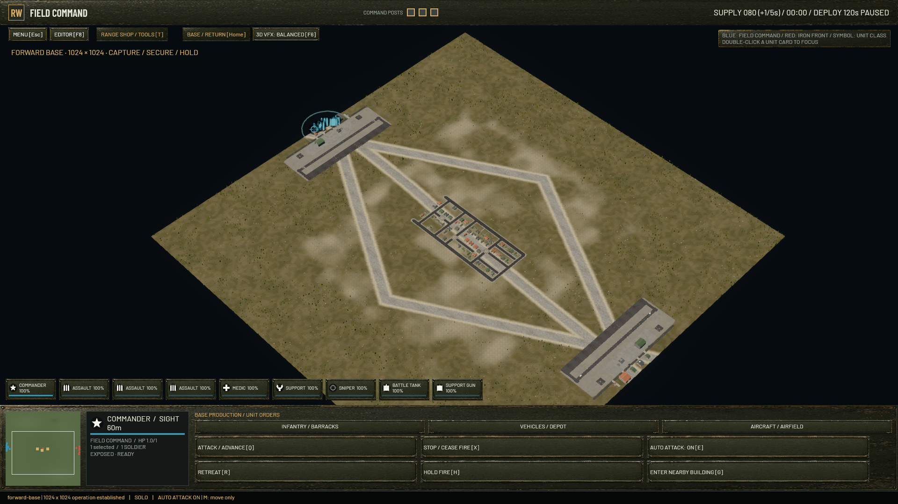

RTX 3060 Laptop GPU · 1920 × 1080 · 1024 × 1024 battlefield · High textures, shadows and explosions.
359 tests, strict Clippy, two sustained camera stress runs, five functional rendering checks and a live battle passed.
| Phase | 95th percentile, ms | 99th percentile, ms | Worst frame, ms | Frames >50 ms |
|---|---|---|---|---|
| Full-map pan | 12.8 → 8.0 | 14.4 → 9.8 | 15.8 → 49.7 | 0 → 0 |
| Scroll zoom | 63.7 → 8.7 | 70.5 → 10.4 | 73.9 → 41.5 | 56 → 0 |
| Close-range pan | 54.1 → 9.2 | 75.1 → 10.7 | 651.1 → 18.6 | 25 → 0 |
| Grab / drag pan | 42.6 → 10.3 | 65.5 → 24.6 | 416.4 → 58.9 | 17 → 1 |
| Mixed zoom and pan | 63.9 → 9.5 | 83.9 → 11.3 | 4687.0 → 15.2 | 44 → 0 |
| Settling after movement | 66.9 → 6.6 | 85.7 → 7.8 | 206.1 → 76.5 | 26 → 1 |
| Whole measured period | 57.1 → 9.1 | 74.0 → 11.2 | 4687.0 → 76.5 | 168 → 2 |
| Phase | 95th percentile, ms | 99th percentile, ms | Worst frame, ms | Frames >50 ms |
|---|---|---|---|---|
| Full-map pan | 11.6 → 7.5 | 12.4 → 9.4 | 19.0 → 51.4 | 0 → 1 |
| Scroll zoom | 58.1 → 8.0 | 73.4 → 9.5 | 76.4 → 14.6 | 48 → 0 |
| Close-range pan | 30.9 → 9.1 | 50.4 → 10.5 | 56.2 → 25.8 | 7 → 0 |
| Grab / drag pan | 20.3 → 9.3 | 53.5 → 10.4 | 70.2 → 17.6 | 7 → 0 |
| Mixed zoom and pan | 53.9 → 8.5 | 62.6 → 9.8 | 77.3 → 18.4 | 48 → 0 |
| Settling after movement | 11.0 → 7.2 | 40.6 → 8.3 | 72.9 → 72.2 | 1 → 1 |
| Whole measured period | 46.1 → 8.6 | 60.8 → 10.1 | 77.3 → 72.2 | 111 → 2 |
Peak adapter memory in the DLSS runs: 5961 → 4716 MiB.
The combat check exposed a separate synchronous terrain-update hitch. These measurements compare the initial streaming rewrite with the follow-up fix during a 30-second combined-arms battle.
| Stage | 95th percentile, ms | Worst call, ms | Calls >50 ms |
|---|---|---|---|
| frame | 15.23 → 15.61 | 320.2 → 139.4 | 18 → 12 |
| app.main | 10.60 → 11.11 | 304.1 → 134.9 | 18 → 12 |
| terrain.stream | 0.05 → 0.05 | 157.3 → 8.3 | 9 → 0 |
| scenery.stream | 0.37 → 0.39 | 27.4 → 7.6 | 0 → 0 |
| base.sync | 0.01 → 0.02 | 61.7 → 0.2 | 9 → 0 |
The reported improvements are measured stress-test results, not a guarantee that every driver or gameplay hitch has disappeared.



Machine-readable validation and pipeline counters
Executable SHA-256: 32cc471cff4591dc28a071c5ab59a39a9dedb9df5c2328668d48d6588505729b